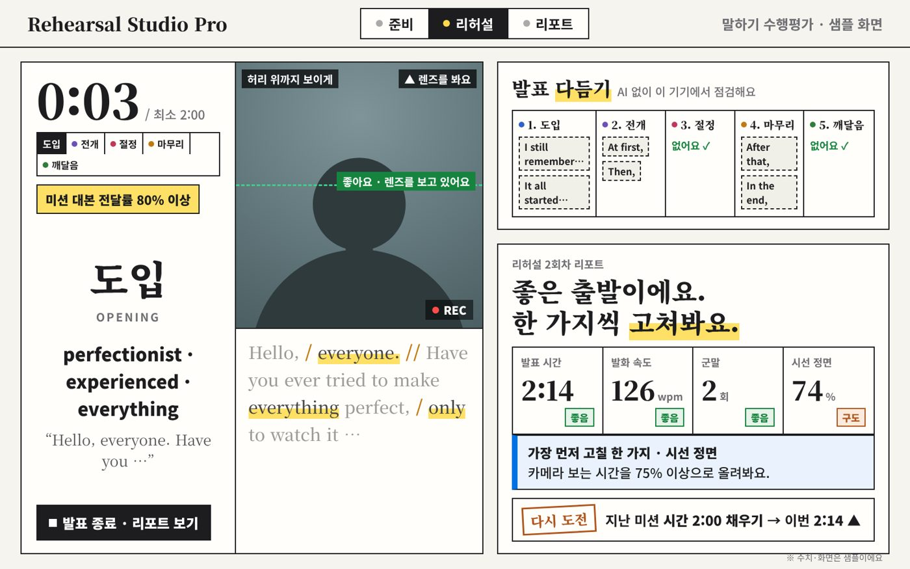
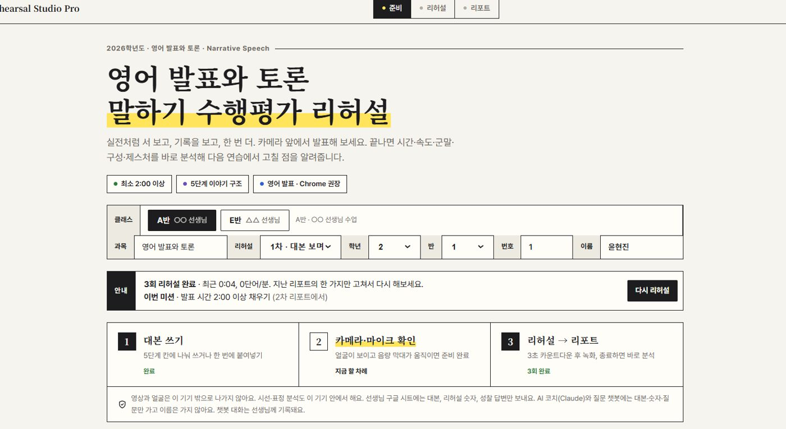
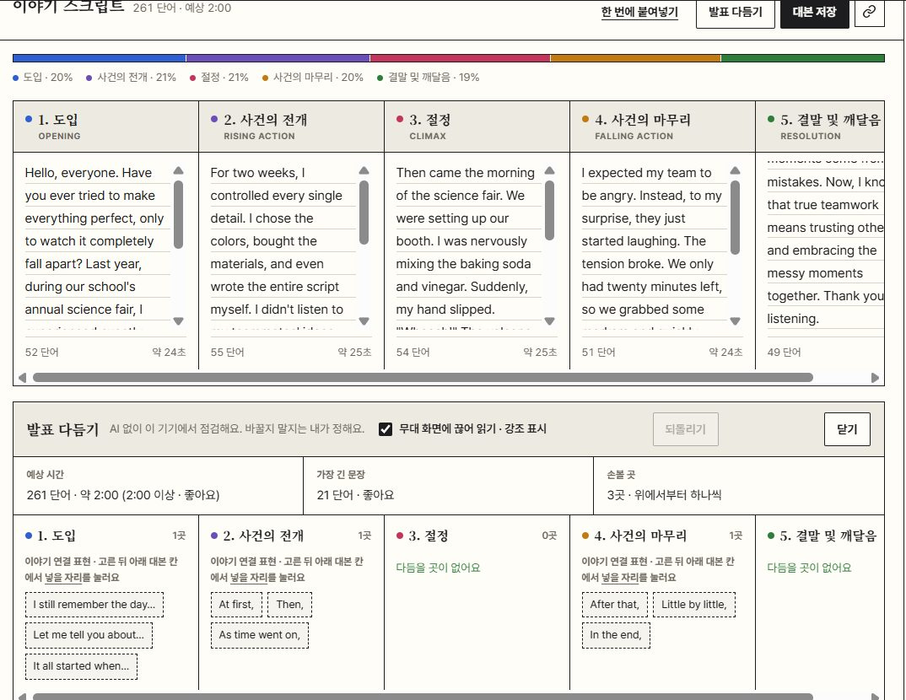
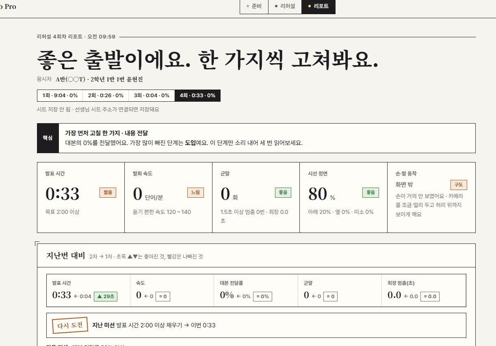

학생이 5단계 이야기 대본을 쓰고, 내 모습을 보면서 리허설하고, 끝나면 시간·속도·군말·시선·손동작 리포트를 바로 받아요. 수업용 버전은 대본·수치·성찰이 학생별 구글 시트에 쌓여서 세특 쓸 때 그대로 꺼내 써요.

문장을 대신 써 주지 않아요. 어디를, 어떻게 고칠지만 보여 줘서 과정중심평가 취지에 맞아요.
카메라에 '허리 위까지 보이게', '렌즈를 봐요' 가이드가 뜨고, 렌즈를 제대로 보면 바로 '좋아요'가 켜져요. 시선·표정·손동작 분석은 전부 기기 안에서만.
도입·전개·절정·마무리·깨달음 다섯 칸에 나눠 쓰거나 한 번에 붙여넣기. 칸별 단어 수와 예상 시간이 바로 보여서 2분을 채웠는지 스스로 알아요.
AI 없이 기기에서 대본을 점검해요. 가장 긴 문장과 손볼 곳을 짚고, 이야기 연결 표현(At first, / Then, / In the end,)을 골라 원하는 자리에 끼워 넣어요. 되돌리기도 돼요.
끊어 읽기(/, //)와 강조 표시가 된 대본, 단계별 큐카드(핵심 단어 3개). 1차는 대본을 보며, 2차는 대본 없이 큐카드만 보고.
발표 시간, wpm, 군말, 멈춤, 시선 정면 비율, 손·팔 동작. 지난 리허설과 비교해 좋아진 것·나빠진 것을 표시하고 '가장 먼저 고칠 한 가지'만 줘요.
잘 안 들린 단어를 다시 연습하는 칸과 짧은 성찰 질문. 수업용 버전에선 이게 전부 학생별 시트에 쌓여서 세특의 '준비 → 연습 → 성장' 근거가 돼요.
수치는 테스트 리허설 값이에요.



크롬에서 열고, 카메라·마이크 허용만 해 주면 끝이에요.
클래스, 학년·반·번호, 이름을 고르거나 입력
5칸에 나눠 쓰거나 한 번에 붙여넣기, 발표 다듬기로 점검
얼굴이 보이고 음량 막대가 움직이면 준비 완료
3초 카운트다운 뒤 녹화, 1차는 대본 보며 · 2차는 큐카드만
지표와 지난번 대비, 다음 미션 하나
안 들린 단어 다시 연습, 성찰 질문 답하기